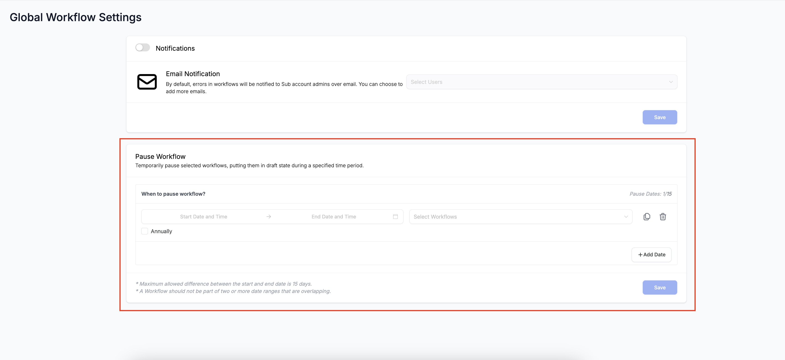
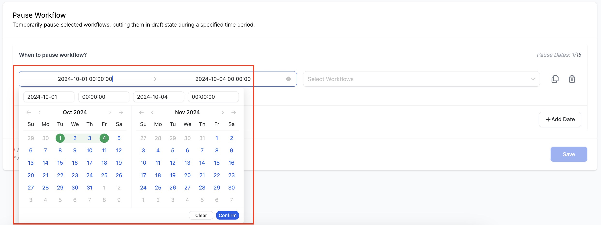
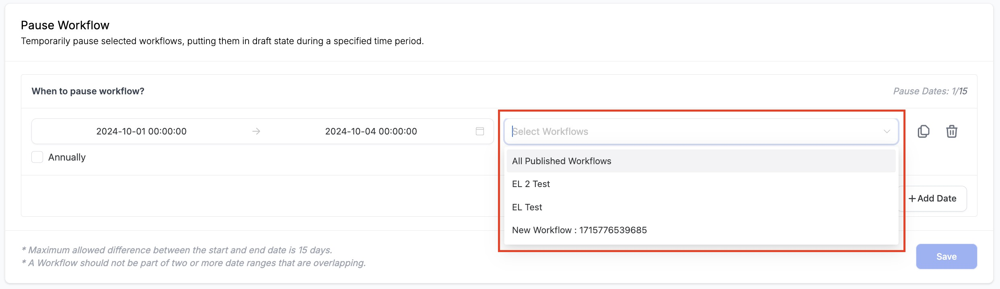
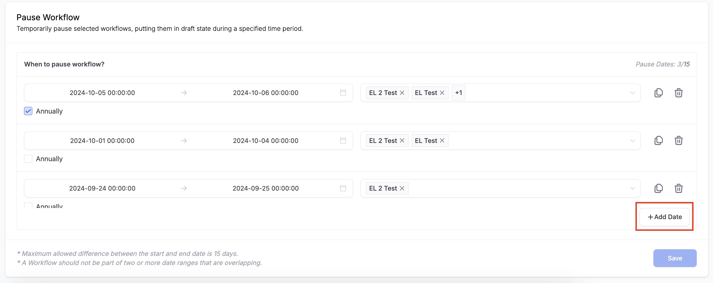
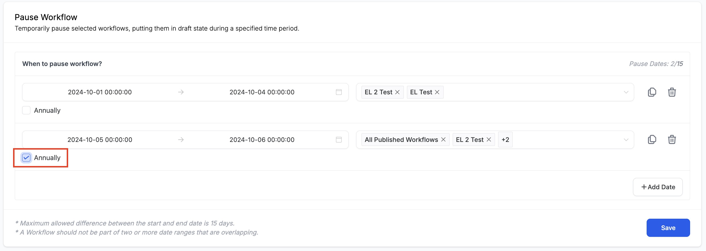
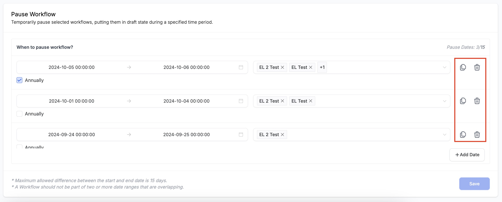
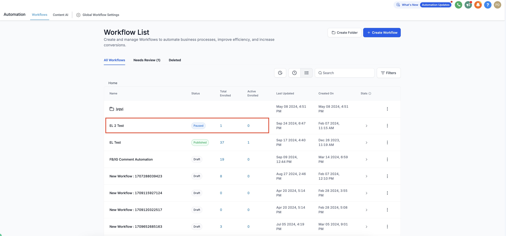
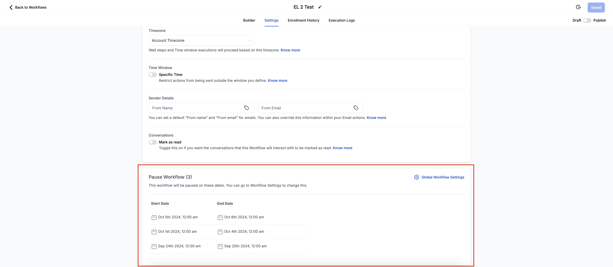

Overview
The Pause Workflow feature allows admins to temporarily halt specific workflows, pausing the workflow without the need to delete or draft the entire workflow. This feature is especially useful for workflows with seasonal actions where specific processes need to be paused and resumed at a later time. Additionally, it provides flexibility in managing workflows for testing, refining, or adjusting actions without fully disrupting the system.
How it Works
1. Go to Global Workflow Settings - The Pause workflow feature is available in the "Global Workflow Settings"

2. Select the Start and End Date and Time - Click on the "Start Date and Time" field to select the Start and End Date and Time. After selecting the range click on the "Confirm" button.

3. Select Workflows - Click on the "Select Workflows" field to select one, multiple or all Published workflows. Please note only the "Published" workflows will be populated in the dropdown.

4. Add Date - You can add multiple row items by clicking on the "Add Date" button. Currently the users can add upto 15 different date range to Pause workflows.

5. Run the Pause feature "Annually" - If you want to Pause certain workflows for same dates every year just click on the "Annually" checkbox that is present for each row item. When it is ticked the selected workflows will automatically pause for the same dates every year.

6. Clone & Delete - If you want to "Clone" a row item just click on the Clone icon beside every row to duplicate that row and if you want to "Delete" a row item just click on the delete icon to remove the row.

7. Paused Status - When the workflows are in the "Paused" state it will be reflected in the Workflow Landing Page. The status against each paused workflow will be highlighted as "Paused".

8. Builder Settings - In the builder settings for each workflow there is a new section present named "Pause Workflow". In this section you can get the details about the date and time when this workflow is Paused.
You can also access the "Global Workflow Settings" from this page if you want to make any changes in the Pause dates.

Points to Remember